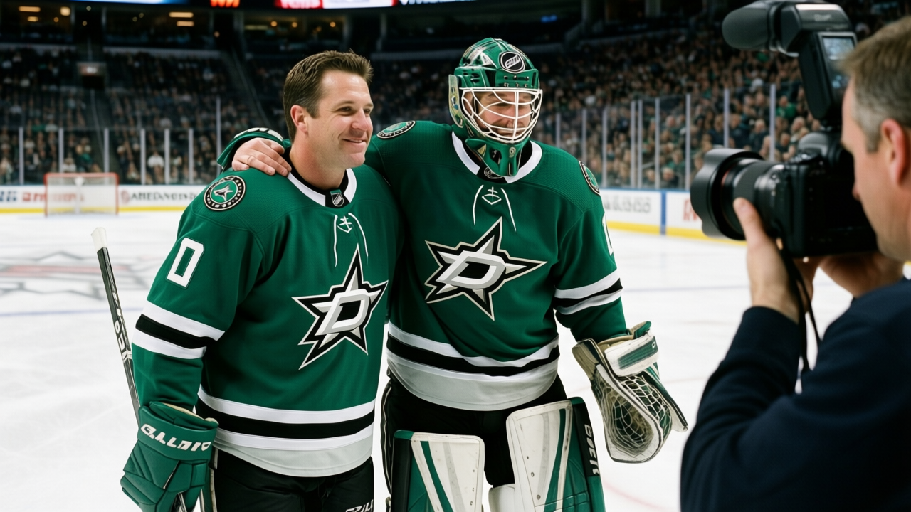

1,435 vs 2,349: The Ice-Time Gap That Separates the Best Rooms From the Worst
Teams that dress more bodies and spread their minutes finish higher. The correlation isn't perfect, but the 10 narrowest rotations average 8 positions better than the 10 widest.
 Doug ReimerAnalytics editor, ex-video coach · The Slot Report
Doug ReimerAnalytics editor, ex-video coach · The Slot Report
The method: total season minutes for every skater on every roster, difference between the most-used and the least-used man. The finding: the 10 clubs with the narrowest gaps hold 8 of the top 10 spots in the standings. The 10 with the widest gaps hold 8 of the bottom 10.
 Edmonton Oilers runs the tightest rotation in hockey. Their top skater carries 1,725 minutes, their 38th man carries 290. The gap is 1,435 minutes. They sit 5th with 57 points. At the other end,
Edmonton Oilers runs the tightest rotation in hockey. Their top skater carries 1,725 minutes, their 38th man carries 290. The gap is 1,435 minutes. They sit 5th with 57 points. At the other end,  Minnesota Wild has a gap of 2,349 minutes across 35 skaters and 38 points, 26th of 30.
Minnesota Wild has a gap of 2,349 minutes across 35 skaters and 38 points, 26th of 30.
The full table, sorted by spread:
| Team | Skaters Used | Minutes Spread | Points | Standing |
|---|---|---|---|---|
| Edmonton Oilers | 38 | 1,435 | 57 | 5th |
 Dallas Stars Dallas Stars | 36 | 1,584 | 62 | 2nd |
 New York Islanders New York Islanders | 38 | 1,596 | 44 | 16th |
 Florida Panthers Florida Panthers | 39 | 1,625 | 39 | 22nd |
 Tampa Bay Lightning Tampa Bay Lightning | 36 | 1,688 | 61 | 3rd |
 Vancouver Canucks Vancouver Canucks | 37 | 1,850 | 57 | T-5th |
 Colorado Avalanche Colorado Avalanche | 37 | 1,883 | 57 | T-5th |
 Columbus Blue Jackets Columbus Blue Jackets | 37 | 1,947 | 46 | 15th |
 Nashville Predators Nashville Predators | 41 | 1,951 | 59 | 6th |
 Toronto Maple Leafs Toronto Maple Leafs | 40 | 1,986 | 71 | 1st |
 Chicago Blackhawks Chicago Blackhawks | 40 | 1,990 | 34 | 29th |
 New York Rangers New York Rangers | 38 | 2,037 | 57 | T-5th |
 Buffalo Sabres Buffalo Sabres | 38 | 2,049 | 47 | 14th |
 Phoenix Coyotes Phoenix Coyotes | 40 | 2,143 | 38 | T-25th |
 Mighty Ducks of Anaheim Mighty Ducks of Anaheim | 38 | 2,165 | 50 | T-11th |
 Carolina Hurricanes Carolina Hurricanes | 41 | 2,179 | 55 | T-8th |
 Philadelphia Flyers Philadelphia Flyers | 40 | 2,183 | 40 | T-20th |
 Detroit Red Wings Detroit Red Wings | 38 | 2,189 | 50 | T-11th |
 Washington Capitals Washington Capitals | 38 | 2,211 | 55 | T-8th |
 St. Louis Blues St. Louis Blues | 37 | 2,228 | 33 | 30th |
 Pittsburgh Penguins Pittsburgh Penguins | 40 | 2,241 | 39 | T-23rd |
 Calgary Flames Calgary Flames | 41 | 2,243 | 34 | T-29th |
 New Jersey Devils New Jersey Devils | 40 | 2,249 | 53 | 11th |
 Montreal Canadiens Montreal Canadiens | 38 | 2,269 | 36 | 27th |
 Los Angeles Kings Los Angeles Kings | 39 | 2,275 | 43 | T-18th |
 San Jose Sharks San Jose Sharks | 37 | 2,284 | 43 | T-18th |
 Atlanta Thrashers Atlanta Thrashers | 40 | 2,313 | 36 | 28th |
 Boston Bruins Boston Bruins | 36 | 2,331 | 43 | T-18th |
 Ottawa Senators Ottawa Senators | 42 | 2,340 | 40 | T-20th |
| Minnesota Wild | 35 | 2,349 | 38 | T-25th |
Eight of ten in each group
The top 10 by narrowest spread produce a familiar list. Dallas Stars is 2nd. Tampa Bay Lightning is 3rd. Toronto Maple Leafs is 1st, sitting 10th-narrowest at 1,986 minutes and holding the pattern. Nashville Predators is 6th. Four of the top six clubs play in the top 10 for even distribution.
The two counter-examples are New York Islanders (44 points, 16th) and Florida Panthers (39, 22nd). Both spread their minutes well but can't finish. Florida's room is the happiest in hockey (96.2 morale average) and still 7 points below the league mean. New Jersey's New Jersey Devils 53 points makes them the outlier in the bottom 10, a team that concentrates minutes on  Martin Brodeur93 and a small top six and still wins enough to stay playoff-relevant.
Martin Brodeur93 and a small top six and still wins enough to stay playoff-relevant.
The bottom 10 by widest spread reads like the basement. Minnesota Wild, Atlanta Thrashers, Montreal Canadiens, Boston Bruins, Ottawa Senators, St. Louis Blues, Calgary Flames, Phoenix Coyotes: eight of the ten lowest point totals in the league.
The mechanism
Wide spread means a bench that can't be trusted. The coach leans on four defensemen and twelve forwards; they're burned by February and losing a step against fresh bottom-six units. Narrow spread means the coach trusts 14 or 15 guys at even strength, gets rest cycles for the stars, and keeps the third line honest enough to kill a penalty without a mismatch.
Colorado Avalanche gives 14.6 minutes per game per skater, the lowest in the league, across 37 men. Nashville Predators gives 17.6 minutes per skater, the highest, across 41 men. The Avalanche get more out of fewer minutes because their spread is narrow; the Predators get more out of more minutes because their spread is also narrow.
What Minnesota proves
The gap between Minnesota Wild's #1 skater (2,581 minutes) and their 35th man (232 minutes) is the largest in hockey by 9 minutes over Ottawa Senators. Only 35 players got on the ice this season, fewer than any other club. Their payroll is the lowest at $29.97M, their profit the highest at $34.64M per game. The result is 38 points and 26th place.
The Bureau's Book grades Minnesota's roster thin:  Manny Fernandez85 at 87 is their highest-rated player in the top 60, a goaltender. Their top skater among risers is Pierre-Marc Bouchard75 at 77 overall, a +6 on the Development Index with 19 points in 44 games. That's the ceiling of a 35-man rotation: the next man up grades 10 points below the league's top 60.
Manny Fernandez85 at 87 is their highest-rated player in the top 60, a goaltender. Their top skater among risers is Pierre-Marc Bouchard75 at 77 overall, a +6 on the Development Index with 19 points in 44 games. That's the ceiling of a 35-man rotation: the next man up grades 10 points below the league's top 60.
New Jersey Devils runs a 2,249 spread and sits 11th. Toronto Maple Leafs runs 1,986 and leads the league. The pattern is clean at the extremes: the two teams at the ends of this table, Edmonton and Minnesota, sit 21 positions apart.